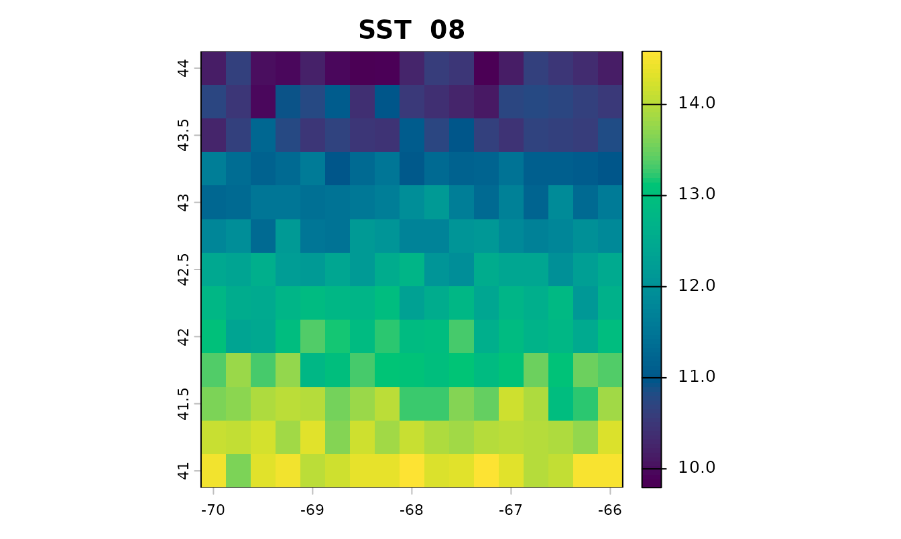
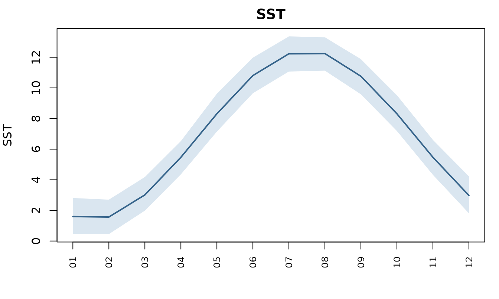
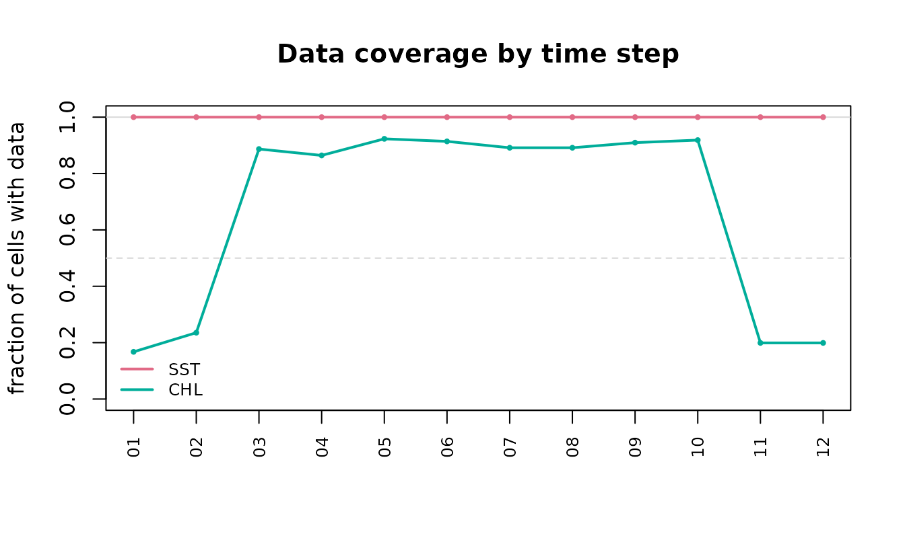

This walks a set of observations from raw positions to a table a model can be fitted to, and shows what each step actually returns.
Every number and figure below is computed when the vignette is built. Nothing is downloaded: the covariates are synthetic, generated to look like a Gulf of Maine grid with a seasonal cycle and satellite cloud gaps. The calls are the ones you would make against real data, so a fetch is the only thing to substitute.
bb <- list(xmin = -70, xmax = -66, ymin = 41, ymax = 44)
env <- accessCopernicus(vars = c("SST", "MLD"), years = 2015, months = 1:12,
bounding_box = bb)accessCopernicus() returns one row per grid cell per
time step, as an sf point object:
env
#> Simple feature collection with 2652 features and 5 fields
#> Geometry type: POINT
#> Dimension: XY
#> Bounding box: xmin: -70 ymin: 41 xmax: -66 ymax: 44
#> Geodetic CRS: WGS 84
#> First 10 features:
#> SST MLD YEAR MONTH DAY geometry
#> 1 3.530795 75.91602 2015 1 1 POINT (-70 41)
#> 2 3.733319 74.01873 2015 1 1 POINT (-69.75 41)
#> 3 3.478501 74.88672 2015 1 1 POINT (-69.5 41)
#> 4 4.086228 72.43991 2015 1 1 POINT (-69.25 41)
#> 5 3.769785 81.31905 2015 1 1 POINT (-69 41)
#> 6 3.482291 74.91623 2015 1 1 POINT (-68.75 41)
#> 7 3.809265 71.09309 2015 1 1 POINT (-68.5 41)
#> 8 3.871989 76.50121 2015 1 1 POINT (-68.25 41)
#> 9 3.831353 76.69915 2015 1 1 POINT (-68 41)
#> 10 3.611061 72.95215 2015 1 1 POINT (-67.75 41)Look before you model
Three plots answer the questions worth asking of a download, and each returns the data it drew rather than only drawing it.
plot_env() maps one variable for one time step. This is
the fastest way to catch a bounding box that landed somewhere
unintended, or a variable that is entirely NA:

plot_series() reduces each step to one number over the
study area, so the seasonal cycle and its spatial spread are both
visible:
series <- plot_series(env, "SST")
head(series, 4)
#> variable step label value lower upper
#> 1 SST 1 01 1.599484 0.4711648 2.809843
#> 2 SST 2 02 1.566979 0.4521412 2.700704
#> 3 SST 3 03 3.013007 1.9838243 4.179774
#> 4 SST 4 04 5.467445 4.3553468 6.525119Gaps are not spread evenly
Satellite variables are missing wherever cloud blocked the view, and those gaps cluster in particular seasons. Adding a chlorophyll field with realistic winter gaps:
env$CHL <- 1.2 + 2.4 * exp(-((env$MONTH - 5)^2) / 5) + stats::rnorm(nrow(env), 0, 0.1)
winter <- env$MONTH %in% c(11, 12, 1, 2)
env$CHL[winter][sample(sum(winter), round(sum(winter) * 0.8))] <- NA
env$CHL[!winter][sample(sum(!winter), round(sum(!winter) * 0.1))] <- NAplot_coverage() is the one to run before trusting a
monthly mean:
coverage <- plot_coverage(env, c("SST", "CHL"))
round(coverage$coverage[coverage$variable == "CHL"], 2)
#> [1] 0.17 0.24 0.89 0.86 0.92 0.91 0.89 0.89 0.91 0.92 0.20 0.20A quarter of the grid in winter and near-complete in summer is exactly the shape that decides whether a winter value means anything.
Matching
matchData() joins each observation to the nearest cell
within the same time period. Some observations here are deliberately
placed in a month the covariates do not cover, and some outside the
grid:
observations <- sf::st_as_sf(
data.frame(
lon = c(-69.5, -68.2, -67.1, -66.5, -69.0, -64.0),
lat = c(41.5, 42.3, 43.1, 41.9, 43.6, 42.0),
YEAR = 2015L,
MONTH = c(3L, 6L, 8L, 6L, 11L, 6L),
count = c(12, 45, 7, 88, 3, 21)
),
coords = c("lon", "lat"), crs = 4326)
matched <- matchData(observations, env)
sf::st_drop_geometry(matched)[c("MONTH", "count", "SST", "MLD", "CHL")]
#> MONTH count SST MLD CHL
#> 1 3 12 4.595216 68.79593 2.382153
#> 2 6 45 10.975591 22.73822 3.127191
#> 3 8 7 11.694670 13.99398 1.475718
#> 4 6 88 11.291059 22.38248 3.175495
#> 5 11 3 4.177107 50.49188 NA
#> 6 6 21 11.425503 25.23311 NAEvery observation comes back, in the same order, with the covariates
attached. The last one sits well outside the grid and still matched —
matchData() uses the nearest cell, and nearest has
no maximum distance. That is worth knowing: an observation far outside
the study area is joined to the closest edge cell rather than dropped,
so check your bounding box covers your stations.
The November observation has NA chlorophyll, because
that cell was under cloud. That is a real gap rather than a failure, and
the source of it is worth checking before dropping the row:
colSums(is.na(sf::st_drop_geometry(matched)))
#> YEAR MONTH count SST MLD CHL LON LAT
#> 0 0 0 0 0 2 0 0Choosing a resolution
Real products do not share a grid. Physics is 0.083°, biogeochemistry 0.25°, and satellite ocean colour 4 km, so combining them means deciding which grid to keep.
Aggregating is the safe direction, because every value in the result summarises values that were really measured:
coarse <- upscale_grid(env, to = 0.5, vars = "SST", min_coverage = 0)
c(cells_before = nrow(env) / 12, cells_after = nrow(coarse) / 12)
#> cells_before cells_after
#> 221 48Interpolating is the direction to be careful in. It adds cells, not information:
fine <- downscale_grid(coarse, to = 0.25, vars = "SST")
# `nearest`, the default, invents no values: every one was already in the source.
all(stats::na.omit(fine$SST) %in% coarse$SST)
#> [1] TRUEbilinear would return a smooth field that looks like a
finely-resolved measurement and is not, which is why the blunt method is
the default.
Partial coverage comes back NA
Aggregating chlorophyll over the winter, when most cells are empty,
is the case min_coverage exists for:
january <- env[env$MONTH == 1, ]
strict <- upscale_grid(january, to = 0.5, vars = "CHL", min_coverage = 0.5)
loose <- upscale_grid(january, to = 0.5, vars = "CHL", min_coverage = 0)
c(reported_at_half_coverage = sum(!is.na(strict$CHL)),
reported_with_no_guard = sum(!is.na(loose$CHL)))
#> reported_at_half_coverage reported_with_no_guard
#> 1 39Both numbers are available; only one of them says how much went into
it. keep_counts = TRUE returns the fraction behind each
value.
Covariates that are not gridded
Two other kinds attach differently. Seafloor terrain is static, so the same value goes to every time step at a location:
bathy <- fetch_bathymetry(bounding_box = bb)
matched <- attach_bathymetry(matched, bathy, c("DEPTH", "SLOPE", "TPI"))Climate indices have no spatial dimension at all — one value per month describes the whole basin, so every observation in a month receives the same number:
matched <- attach_climate_index(matched, c("NAO", "AMOC"))That makes them a different kind of covariate. They carry information about when, and none about where within a region conditions are better. A model given only indices cannot produce a map.
as.data.frame(index_dictionary())[c("name", "units", "source")]
#> name units source
#> 1 NAO standardized anomaly NOAA CPC
#> 2 AO standardized anomaly NOAA CPC
#> 3 AMO degrees C NOAA PSL
#> 4 PDO standardized anomaly NOAA PSL
#> 5 LCR fraction Jutras et al. 2023, Nature Communications
#> 6 AMOC Sv RAPID-MOCHA-WBTS array at 26.5NWhere to go next
-
vignette("datamatch")is this document; the README covers the same ground in more depth, including forecasts, daily data, and gap filling. -
variable_dictionary()andindex_dictionary()list what can be fetched. - The README’s References section lists the DOI for every data source, since the obligation to cite travels with the data.